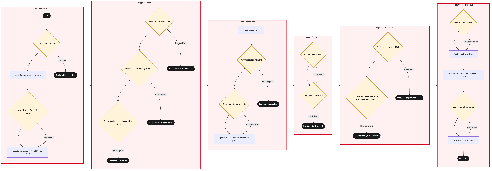

Updated 2026-08-21
Supplier Quality and Spec 2000 Ordering
Process flow
Click to zoom

Process steps
▼
Phase 1 — Part Identification
4 steps
| Step | Activity | Role | System | Input | Output | KPI | Dec | Exc | Pain point |
|---|---|---|---|---|---|---|---|---|---|
| 1.1 | Identify defective part | YYZ Maintenance Engineer | TRAXB | Maintenance record, technical manual | Defective part identification report | Time to identify defective part < 2 hours | Y | N | Technical manuals are sometimes outdated, leading to delays in identifying the correct replacement part. |
| 1.2 | Check inventory for spare parts | YYZ Maintenance Engineer | TRAXB | Defective part identification report | Inventory check report | Time to check inventory < 1 hour | N | N | Inventory data is sometimes inaccurate, leading to false negatives. |
| 1.3 | Review work order for additional parts | YYZ Maintenance Engineer | TRAXB | Defective part identification report | Work order review report | Time to review work order < 0.5 hours | Y | N | Work orders may not always be up-to-date, leading to missed parts. |
| 1.4 | Update work order with additional parts | YYZ Maintenance Engineer | TRAXB | Defective part identification report, work order review report | Updated work order | Time to update work order < 0.5 hours | N | N | Manual entry errors can occur during updates. |
▼
Phase 2 — Supplier Selection
3 steps
| Step | Activity | Role | System | Input | Output | KPI | Dec | Exc | Pain point |
|---|---|---|---|---|---|---|---|---|---|
| 2.1 | Select approved supplier | YYZ Maintenance Engineer | AeroxchangeC | Defective part identification report, inventory check report | Approved supplier list | Time to select approved supplier < 30 minutes | Y | N | Supplier availability can be limited, requiring multiple attempts to find a suitable vendor. |
| 2.2 | Review supplier's quality assurance | YYZ Maintenance Engineer | AeroxchangeC | Approved supplier list | Quality assurance report | Time to review quality assurance < 1 hour | Y | N | Supplier quality data may be incomplete or outdated, leading to delays. |
| 2.3 | Check supplier's compliance with CAWIS | YYZ Maintenance Engineer | Transport Canada CAWISC | Approved supplier list | CAWIS compliance report | Time to check CAWIS compliance < 1 hour | Y | N | CAWIS data may not always be up-to-date, leading to compliance issues. |
▼
Phase 3 — Order Preparation
4 steps
| Step | Activity | Role | System | Input | Output | KPI | Dec | Exc | Pain point |
|---|---|---|---|---|---|---|---|---|---|
| 3.1 | Prepare order form | YYZ Maintenance Engineer | TRAXB | Defective part identification report, approved supplier list, quality assurance report, CAWIS compliance report | Order form | Time to prepare order form < 1 hour | N | N | Manual data entry can be prone to errors. |
| 3.2 | Verify part specifications | YYZ Maintenance Engineer | TRAXB | Order form | Specification verification report | Time to verify specifications < 1 hour | Y | N | Specs may not match exactly, requiring manual adjustments. |
| 3.3 | Check for alternative parts | YYZ Maintenance Engineer | TRAXB | Specification verification report | Alternative parts list | Time to check alternative parts < 0.5 hours | Y | N | Alternative parts may not always be available, leading to delays. |
| 3.4 | Update order form with alternative parts | YYZ Maintenance Engineer | TRAXB | Order form, alternative parts list | Updated order form | Time to update order form < 0.5 hours | N | N | Manual entry errors can occur during updates. |
▼
Phase 4 — Order Execution
2 steps
| Step | Activity | Role | System | Input | Output | KPI | Dec | Exc | Pain point |
|---|---|---|---|---|---|---|---|---|---|
| 4.1 | Submit order to TRAX | YYZ Maintenance Engineer | TRAXB | Order form, specification verification report, CAWIS compliance report | Order confirmation | Time to submit order < 30 minutes | Y | N | System connectivity issues can cause delays in submission. |
| 4.2 | Retry order submission | YYZ Maintenance Engineer | TRAXB | Order form, specification verification report, CAWIS compliance report | Order confirmation | Time to retry submission < 10 minutes | Y | N | System connectivity issues can persist, requiring multiple retries. |
▼
Phase 5 — Compliance Verification
2 steps
| Step | Activity | Role | System | Input | Output | KPI | Dec | Exc | Pain point |
|---|---|---|---|---|---|---|---|---|---|
| 5.1 | Verify order status in TRAX | YYZ Maintenance Engineer | TRAXB | Order confirmation | Order status report | Time to verify order status < 0.5 hours | Y | N | Orders may be delayed or misrouted, leading to verification issues. |
| 5.2 | Check for compliance with regulatory requirements | YYZ Maintenance Engineer | Transport Canada CAWISC | Order status report | Regulatory compliance report | Time to check regulatory compliance < 0.5 hours | Y | N | Regulatory data may not always be up-to-date, leading to compliance issues. |
▼
Phase 6 — Post-Order Monitoring
5 steps
| Step | Activity | Role | System | Input | Output | KPI | Dec | Exc | Pain point |
|---|---|---|---|---|---|---|---|---|---|
| 6.1 | Monitor order delivery | YYZ Maintenance Engineer | TRAXB | Order status report | Delivery status report | Time to monitor delivery < 24 hours | Y | N | Deliveries may be delayed, leading to monitoring issues. |
| 6.2 | Escalate delivery delay | YYZ Maintenance Engineer | TRAXB | Order status report, delivery status report | Escalation ticket | Time to escalate delivery < 1 hour | N | N | Manual escalation can be prone to errors. |
| 6.3 | Update work order with delivery status | YYZ Maintenance Engineer | TRAXB | Order status report, delivery status report | Updated work order | Time to update work order < 0.5 hours | N | N | Manual entry errors can occur during updates. |
| 6.4 | Final review of work order | YYZ Maintenance Engineer | TRAXB | Updated work order, delivery status report | Final work order review report | Time to review work order < 0.5 hours | Y | N | Final review may uncover issues that require rework. |
| 6.5 | Correct work order issues | YYZ Maintenance Engineer | TRAXB | Updated work order, final work order review report | Corrected work order | Time to correct issues < 0.5 hours | N | N | Manual corrections can be prone to errors. |
Swim lanes
YYZ Maintenance Engineer1.1 1.2 1.3 1.4 2.1 2.2 2.3 3.1 3.2 3.3 3.4 4.1 4.2 5.1 5.2 6.1 6.2 6.3 6.4 6.5
Systems touched
TRAXBAeroxchangeCTransport Canada CAWISC
Key performance indicators
- Order identification and inventory check within 2.5 hours
- Supplier selection and quality review within 4.5 hours
- Order form preparation and specification verification within 2 hours
- Order submission and status verification within 1 hour
- Delivery monitoring and work order update within 27 hours
Risks and control points
- Technical manuals being outdated or inaccurate
- Inventory data inaccuracies leading to false negatives
- Multiple attempts required to find a suitable supplier
- Supplier quality data being incomplete or outdated
- System connectivity issues causing submission delays
- Regulatory data not always being up-to-date
- Deliveries being delayed
- Manual entry errors during updates
Air Canada Process Wiki — process and systems reference compiled from public sources
for IT Application Management and User Support pre-sales discovery.
Built 2026-08-21. Every system carries an evidence tier: tier C is an industry pattern and tier U is an open
question, and neither should be asserted as fact about Air Canada without confirmation in discovery.
Not affiliated with or endorsed by Air Canada. Air Canada, Aeroplan and Altitude are trademarks of Air Canada.